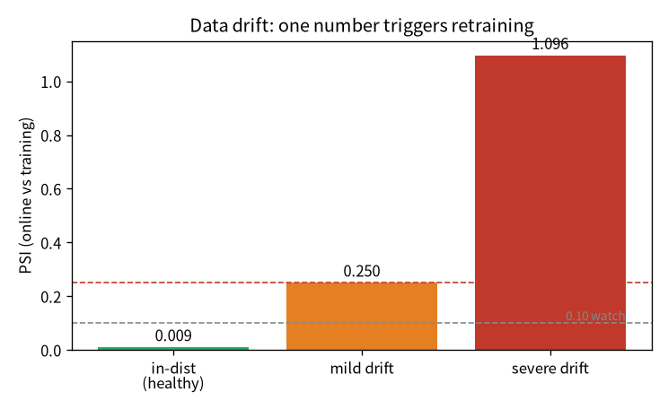

flowchart LR A["01 GPT"]-->B["02 零件"]-->C["03 效率"]-->D["04 資料"]-->E["05 評估"]-->F["06 服務"]-->G["07 治理"]-->H["08 漂移"] E -.後訓練.-> I["09 對齊"] classDef here fill:#c0392b,color:#fff,stroke:#7b241c,stroke-width:2px; class H here
8 會腐壞的系統：drift、重訓、放量
一句話：MLOps 比 DevOps 多兩個變數——資料，和模型會腐壞。所以模型永遠不算「做完」： 世界會漂移，你要持續監控、必要時重訓，而放量的決策又是一個「別用錯指標」的陷阱。
注记這章的定位（讀之前先對齊期待）
假設你已經會：第 7 章的治理與 promotion gate（章节 7）、第 5 章「選對指標」。
學完你會：(1) 講清楚為什麼模型上線後會「腐壞」、要靠什麼持續顧；(2) 逐行把 PSI（資料漂移 指標） 算出來、設門檻自動觸發重訓；(3) 在你自己的 CPU 上親手量 PSI 抓出漂移，並體會放量決策的 坑——低一致率不一定是壞事。本章 💻 配套程式 tiny_drift.py 純標準庫、不需 torch、瞬間跑完。
提示🎯 給技術主管：本章關鍵術語速查（懂的人可跳過）
不必親手實作也能跟上——每個術語一句白話 + 為什麼你該在意（風險 / 成本 / 治理）。
- data drift（資料漂移）：線上流量的分布慢慢偏離訓練時的分布。在意它：模型會悄悄變差，這是「上線後還要持續顧」的根本原因。
- PSI（漂移指標）：把漂移量化成一個數字（<0.1 穩定 / 0.1–0.25 留意 / >0.25 建議重訓）。在意它：可設門檻自動示警，不必靠人盯著儀表板。
- 重訓迴圈（retrain loop）：資料→訓練→評估→gate→上線 的自動外圈。在意它：把「模型維護」變成可重複、可稽核的流程，而非每次手動救火。
- canary / A-B：先導一小部分流量到新模型試水溫。在意它：控制風險地放量，出事的影響面小、可快速回退。
- shadow（影子比對）：新模型在背景跟著算同一批輸入、不影響線上、回報一致率。在意它：上線前的零風險驗證。
- promotion gate（促上線閘）：沒過品質 / 資料檢查就擋下上線。在意它：上線是被程式 enforce，不是「誰想推就推」——這是治理重點（見 章节 7）。
- 放量別只看一致率：新舊一致率低 ≠ 壞，更好的模型本來就該不一樣。在意它：用錯指標當門檻，會擋掉每一次真進步。
8.1 模型上線不是終點
DevOps 的 ML 版（MLOps）比 DevOps 多了兩個變數：資料，和模型會腐壞（data drift）。所以模型 永遠不算「做完」——要持續監控、必要時重訓。我做了嬰兒版但完整的迴圈：
| 項 | 做什麼 |
|---|---|
| 漂移監控 | 線上請求分布 vs 訓練分布（OOV + 分箱 PSI），偏離就建議重訓 |
| 重訓迴圈 | 資料→訓練→評估→註冊→gate→promote 的自動外圈，含回歸檢查（新模型比現行差就擋下） |
| 金絲雀 / A-B | 同時載兩顆模型、導 N% 流量到候選、按版本分標比較 |
| shadow 比對 | 候選在「影子」裡跟著算同一輸入、回報與現行的一致率（不拖延遲） |
| 量化壓縮 | fp16 / int8，量「大小 vs 品質」的取捨 |
這條外圈跟前一章的 promotion gate 接在一起：漂移觸發重訓 → 訓出候選 → 過 gate（章节 7）才 放行。重訓迴圈裡的回歸檢查就是 gate 的「沒比現行更好就擋下」。
8.2 逐行把資料漂移指標（PSI）建起來
「模型會腐壞」聽起來抽象，但漂移可以量化成一個數字。最常用的是 PSI（population stability index）， 我們用 tiny_drift.py 逐行把它建出來。
第 0 步——把分布切成箱、數比例。 線上請求的某個特徵（這裡用「請求長度」）落進各個區間的比例， 就是它的分布。加一點 Laplace 平滑避免空箱讓對數爆掉：
第 1 步——PSI 比兩個分布差多少。 對每個箱，看「線上比例 vs 訓練比例」差多少、乘上對數比，加總：
第 2 步——用業界門檻判讀。 PSI 是有公認門檻的：<0.1 穩定、0.1–0.25 留意、>0.25 顯著漂移。 把它接成自動規則，就是「偏離就建議重訓」：
8.3 💻 在你的機器上：PSI 抓漂移 + 放量的坑
配套程式 tiny_drift.py（純標準庫、瞬間跑完）模擬「訓練時的請求長度分布」，再丟三種線上情境進去：
在我的 Framework 16 上：
=== drift 監控：PSI（線上請求長度 vs 訓練分布）===
情境 PSI 判讀
----------------------------------------------------
同分布（健康） 0.009 穩定（不必動）
輕微漂移（變長一點） 0.250 留意（持續監控）
嚴重漂移（換了流量） 1.096 顯著漂移 → 建議重訓
=== shadow 一致率（候選 vs 現行，同一批輸入）===
一致率：724/1000 = 72.4%
低一致率不一定是壞事——更好的模型本來就該跟舊的不一樣。怎麼讀：
- 漂移變成一個數字：同分布 PSI≈0（穩定）、輕微漂移踩到 0.25 門檻（留意）、嚴重漂移 1.1 （顯著，建議重訓）。一個數字就能設門檻、自動觸發重訓——不用人盯著看（图 8.1）。
- 放量別只看一致率：候選跟現行只有 72% 一致——但這不是壞事。

警告放量決策別只看一個數字
我訓了一顆真候選（8000 步，test_loss 3.46 < 現行 3.70），但它跟現行的輸出一致率只有 67.5%。 低一致率「不是壞事」——是它真的學到更好的東西，更好的模型本來就該跟舊的不一樣。所以放行的硬條件 是「品質 gate（更好就放行）」，一致率只告訴你「改動多大、要多謹慎驗」。把一致率當硬門檻，會擋掉每一次 真進步。這又是一個「選對指標」的例子（呼應 章节 5）。
8.4 帶走什麼
- 模型會腐壞，所以永遠不算「做完」：要持續監控（drift）+ 必要時重訓。
- 漂移可量化：PSI 把「線上 vs 訓練」變成一個數字、設門檻自動觸發重訓。
- 重訓迴圈 + 回歸檢查 + canary/shadow 把「換模型」變成可控、可比較、可回退的流程，接回上一章的 gate。
- 放量決策的硬條件是品質 gate，別把「改動幅度（一致率）」當門檻——那會擋掉每一次真進步。
8.5 練習
注记1（先預測）：把線上分布調回跟訓練一樣，PSI 會怎樣？
tiny_drift.py 的「嚴重漂移」用 mean=32。先寫下你的預測：把它改回 mean=25（跟訓練一樣）， PSI 會落在哪一檔？
提示參考答案
PSI 會掉到接近 0（「穩定」）——兩個分布幾乎一樣，逐箱比例差≈0。剩下的一點點是抽樣雜訊。這也說明 PSI 的門檻（0.1 / 0.25）是為了把「雜訊」和「真漂移」分開——跟第 5 章「先有雜訊尺度再判顯著」同一個思路。
注记2（動手）：換一個漂移特徵
PSI 量的是任一個分布。把「請求長度」換成別的特徵（例如 OOV 比例、某類請求佔比），重算 PSI。 不同特徵會抓到不同的漂移嗎？
提示參考答案
會——漂移可能只出現在某些特徵上（例如長度沒變、但主題分布變了）。所以真實監控會同時盯多個信號 （OOV + 多個分箱 PSI），任一個越線就示警。單一指標會漏掉它沒在看的那種漂移——又是「選對（夠多）指標」。
警告3（弄壞）：把「一致率」當放量硬門檻
假設你規定「候選跟現行一致率要 ≥ 95% 才放量」。用 tiny_drift.py 那個 72% 一致率的候選，會發生什麼？
提示參考答案
它會被擋下——即使它在品質 gate 上其實更好。把一致率當硬門檻，等於規定「新模型必須跟舊的幾乎一樣」， 那就擋掉了每一次真進步。一致率該當「改動多大、要多謹慎驗」的參考，放行的硬條件是品質 gate。 這正是本章最重要的「選對指標」：用錯尺，你會把進步當成風險擋掉。